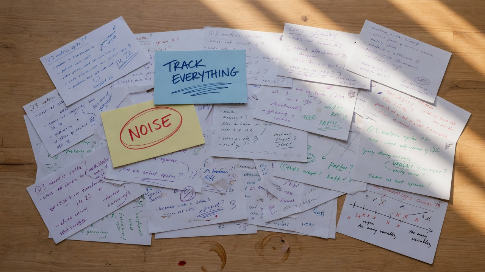
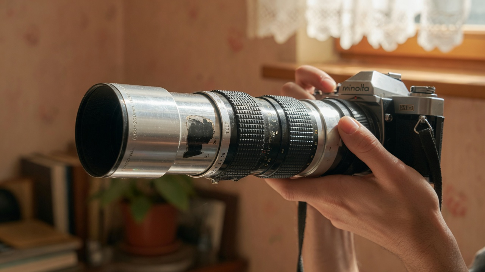
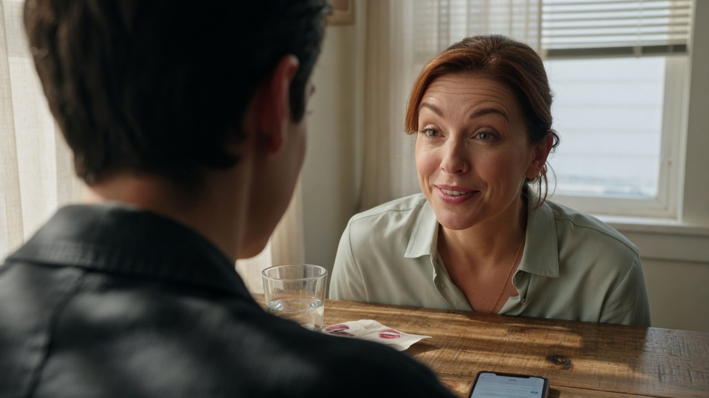
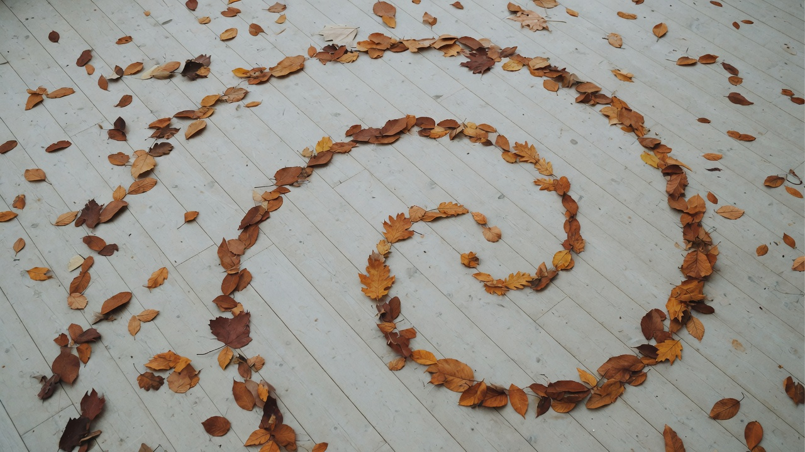
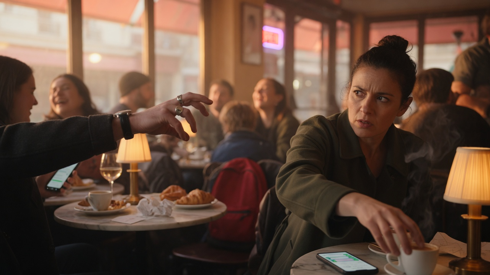
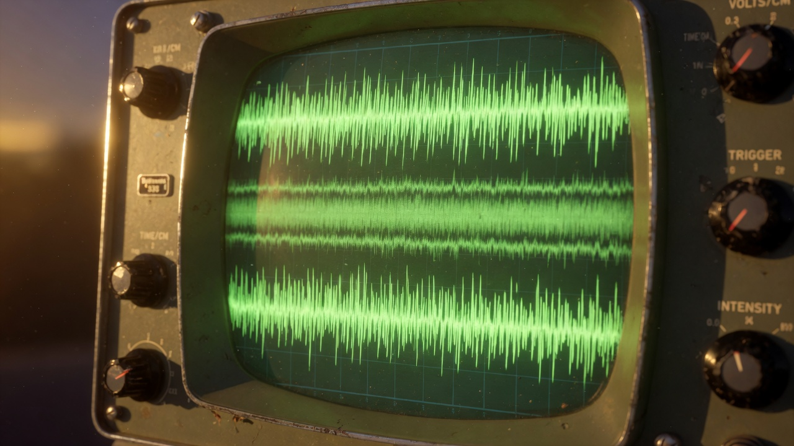
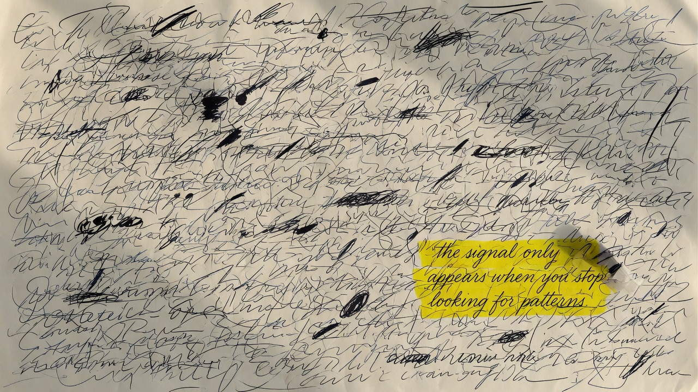

#01 The Leaf Mistaken for the Forest

#02 The Signal in the Noise
#03 The Coastline at Every Scale
#04 The Instrument Tuned Too Sensitive

#05 The Zoom That Won't Release
#06 The Threat Detector at Idle

#07 The Micro-Expression Captured

#08 The Pattern Emerging from Chaos
#09 The Forest from Above
#10 The Replay Loop
#11 The Stuck Zoom LensHERO
#12 The Body's High-Fidelity Report

#13 The Salience Network Firing
#14 The Scale Shift Practice

#15 The Frequency Too High to Hear
#16 The Zoom-Out Breath

#17 The Noise That Hides Pattern
#18 The Fractal Branch
#19 The Wide Lens Finally Turning
#20 The Coherent Self at Multiple Scales